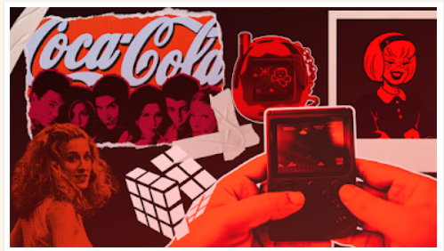

¿Por qué sentimos tanta conexión con cosas que ya no están de moda?
sábado, 13 de junio de 2026
La nostalgia se ha convertido en una estrategia emocional utilizada por la industria del entretenimiento y el marketing para fortalecer la conexión con las audiencias, influir en las decisiones de consumo y generar beneficios comerciales mediante la evocación de recuerdos positivos del pasado.
La nostalgia es una emoción positiva que surge cuando las personas recuerdan experiencias del pasado que les resultan significativas. Desde el punto de vista de la neurociencia, este proceso involucra regiones relacionadas con la memoria y la respuesta emocional, lo que explica por qué estos recuerdos suelen generar sensaciones de bienestar y familiaridad. Debido a ello, la nostalgia ha pasado de ser una experiencia personal a convertirse en una herramienta estratégica dentro del marketing y la industria del entretenimiento.

Fuente: Adaptado de House Beautiful (s. f.).
La nostalgia fortalece la conexión emocional con las audiencias.
Uno de los principales motivos por los que la nostalgia es utilizada en la industria del entretenimiento es su capacidad para generar una conexión emocional con el público. De acuerdo con Barrientos-Báez, Caldevilla-Domínguez y Fondevila-Gascón (2025), la nostalgia favorece la conexión emocional entre las marcas y los consumidores al activar recuerdos asociados con experiencias positivas. Esta capacidad de generar cercanía emocional ha convertido a la nostalgia en un recurso ampliamente utilizado en la comunicación publicitaria.
Asimismo, esta emoción tiene un papel importante en sectores como el cine, las series y las plataformas de streaming, donde cada vez es más común encontrar producciones con referencias, estilos o historias inspiradas en décadas pasadas.
Un caso representativo es Stranger Things, serie que recrea la estética, la música y las referencias culturales de los años ochenta. Su éxito demuestra cómo la nostalgia puede utilizarse para generar una conexión emocional con el público, transformando elementos del pasado en productos atractivos para las audiencias contemporáneas.
Tráiler oficial de Stranger Things 4 Ver video en YouTube ↗La nostalgia influye en las decisiones de consumo.
Además de generar emociones positivas, la nostalgia influye en el comportamiento del consumidor. Las emociones desempeñan un papel importante en la toma de decisiones, por lo que los recuerdos asociados con experiencias agradables pueden aumentar el interés por determinados productos, marcas o contenidos. Cuando una persona percibe familiaridad y cercanía emocional hacia un producto, es más probable que desarrolle una actitud favorable hacia él.
Por esta razón, numerosas empresas utilizan el llamado marketing de nostalgia o retro marketing. Esta estrategia se basa en la idea de que el pasado suele percibirse como un periodo más auténtico, simple o seguro. Como consecuencia, las organizaciones recurren a la reintroducción de productos, estilos o conceptos antiguos para despertar emociones y fortalecer el vínculo con los consumidores.
La nostalgia genera beneficios comerciales.
Además de fortalecer el vínculo emocional con las audiencias, la nostalgia representa una ventaja comercial para las empresas. Núñez (2025) señala que el marketing de nostalgia permite conectar experiencias pasadas con consumidores actuales, incrementando el interés por productos, marcas y contenidos inspirados en otras épocas. Como resultado, numerosas compañías recurren a remakes, secuelas y reediciones con el propósito de aprovechar el valor emocional que los recuerdos tienen para el público.
En conclusión, la nostalgia se ha consolidado como una estrategia emocional eficaz dentro de la industria del entretenimiento y el marketing contemporáneo. Su capacidad para fortalecer la conexión con las audiencias, influir en las decisiones de consumo y generar beneficios comerciales demuestra que se trata de una herramienta con un impacto significativo en la industria moderna. Más que una simple tendencia, la nostalgia funciona como un puente entre el pasado y el presente, permitiendo que recuerdos y emociones se conviertan en elementos clave para la comunicación y el éxito comercial.
“Hago constar que no he dado ni recibido ayuda no autorizada en la realización de esta asignación.”
Bibliografía
Osorio Osorio, A. (2019). El cine como un medio para la nostalgia a través de la cultura pop: los casos de Ready Player One y Stranger Things. Universitat Oberta de Catalunya (UOC). https://hdl.handle.net/10609/92647
Barrientos-Báez, A., Caldevilla-Domínguez, D. y Fondevila-Gascón, J. F. (2025). Efectos neurocomunicacionales de la nostalgia en la publicidad: impacto y conexión emocional con el consumidor. European Public & Social Innovation Review, 10, 1–27. https://doi.org/10.31637/epsir-2025-1861
Núñez, M. (2025). Marketing de nostalgia para conectar el pasado con los consumidores del presente. Experior, 4(1), 79–91. https://doi.org/10.56880/experior41.6
House Beautiful. (s. f.). Imagen sobre nostalgia. Recuperado de https://www.housebeautiful.com/
Netflix. (2022, 12 de abril). Stranger Things 4 | Tráiler oficial | Netflix [Video]. YouTube. https://www.youtube.com/watch?v=b9EkMc79ZSU